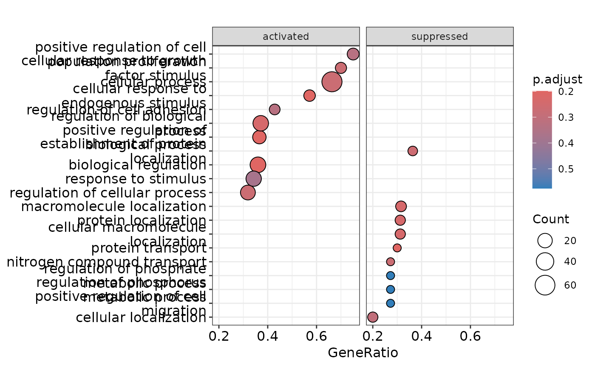
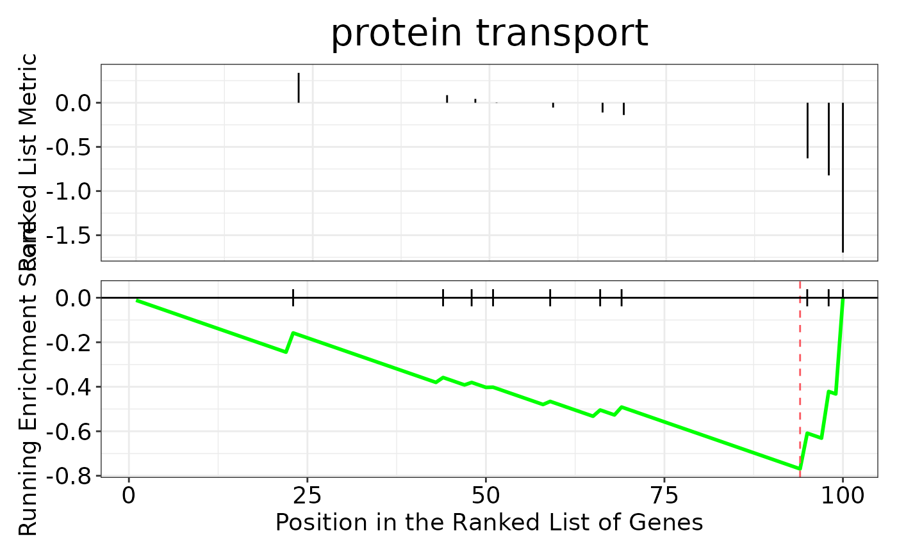

Plot the results of the gene set enrichment analysis
Source:R/enrichment_analysis.R
hd_plot_gsea.Rdhd_plot_gsea() produces useful plots to visualize the results of the
gene set enrichment analysis.
Arguments
- enrichment
The enrichment results obtained from
hd_run_gsea().- seed
Seed for reproducibility. Default is 123.
Details
When KEGG database is used, a cnetplot is generated with ENTREZIDs instead of gene names. For GO and Reactome databases the ENTREZIDs are converted to gene names.
Examples
# Initialize an HDAnalyzeR object
hd_object <- hd_initialize(example_data, example_metadata)
# Run differential expression analysis for AML vs all others
de_results <- hd_run_de_limma(hd_object, case = "AML")
# Run GSEA with Reactome database
enrichment <- hd_run_gsea(de_results,
database = "GO",
ontology = "BP",
expression = "both",
ranked_by = "logFC",
pval_lim_enrichment = 0.9)
#>
#>
#> 'select()' returned 1:1 mapping between keys and columns
#> using 'fgsea' for GSEA analysis, please cite Korotkevich et al (2019).
#> preparing geneSet collections...
#> GSEA analysis...
#> Warning: All values in the stats vector are greater than zero and scoreType is "std", maybe you should switch to scoreType = "pos".
#> leading edge analysis...
#> done...
# Remember that the data is artificial, this is why we use an absurdly high p-value cutoff
# Plot the results
hd_plot_gsea(enrichment)
#> $gene_list
#> 284 328 566 100 9289 54518 250 9048
#> 1.6960339 1.5595837 1.5329435 1.4623826 1.2318594 1.1730140 1.0367356 0.8287936
#> 351 23365 285 181 25 191 10551 115201
#> 0.8227446 0.8063775 0.7728365 0.7561717 0.7468307 0.7340411 0.7046557 0.6292262
#> 306 51129 9296 59 203 59272 51742 55937
#> 0.6196824 0.5226829 0.5198482 0.5046829 0.4815729 0.4660359 0.4581703 0.4408260
#> 199 267 2683 311 176 280 10149 976
#> 0.4324161 0.4288128 0.4217458 0.4048363 0.3834199 0.3761169 0.3758535 0.3654318
#> 30817 1386 405 11093 170690
#> 0.3594460 0.3385817 0.3378419 0.3141056 0.2980142
#>
#> $enrichment
#> #
#> # Gene Set Enrichment Analysis
#> #
#> #...@organism Homo sapiens
#> #...@setType BP
#> #...@keytype ENTREZID
#> #...@geneList Named num [1:37] 1.7 1.56 1.53 1.46 1.23 ...
#> - attr(*, "names")= chr [1:37] "284" "328" "566" "100" ...
#> #...nPerm
#> #...pvalues adjusted by 'BH' with cutoff <0.9
#> #...90 enriched terms found
#> 'data.frame': 90 obs. of 11 variables:
#> $ ID : chr "GO:0007186" "GO:0051716" "GO:0040012" "GO:0048584" ...
#> $ Description : chr "G protein-coupled receptor signaling pathway" "cellular response to stimulus" "regulation of locomotion" "positive regulation of response to stimulus" ...
#> $ setSize : int 10 25 12 11 18 22 13 10 16 16 ...
#> $ enrichmentScore: num 0.648 0.624 0.619 0.62 0.581 ...
#> $ NES : num 1.63 1.61 1.59 1.57 1.55 ...
#> $ pvalue : num 0.0318 0.0349 0.0282 0.0408 0.0427 ...
#> $ p.adjust : num 0.469 0.469 0.469 0.469 0.469 ...
#> $ qvalue : num 0.467 0.467 0.467 0.467 0.467 ...
#> $ rank : num 13 13 13 9 6 13 13 5 15 5 ...
#> $ leading_edge : chr "tags=70%, list=35%, signal=62%" "tags=48%, list=35%, signal=96%" "tags=67%, list=35%, signal=64%" "tags=55%, list=24%, signal=59%" ...
#> $ core_enrichment: chr "566/100/9289/351/23365/181/25" "284/328/566/100/9289/54518/9048/351/23365/285/181/25" "284/566/100/9289/9048/351/285/25" "284/566/100/9289/9048/351" ...
#> #...Citation
#> S Xu, E Hu, Y Cai, Z Xie, X Luo, L Zhan, W Tang, Q Wang, B Liu, R Wang, W Xie, T Wu, L Xie, G Yu. Using clusterProfiler to characterize multiomics data. Nature Protocols. 2024, doi:10.1038/s41596-024-01020-z
#>
#>
#> $dotplot

#>
#> $gseaplot

#>
#> $cnetplot
 #>
#> $ridgeplot
#> Picking joint bandwidth of 0.17
#>
#> $ridgeplot
#> Picking joint bandwidth of 0.17
 #>
#> attr(,"class")
#> [1] "hd_enrichment"
#>
#> attr(,"class")
#> [1] "hd_enrichment"